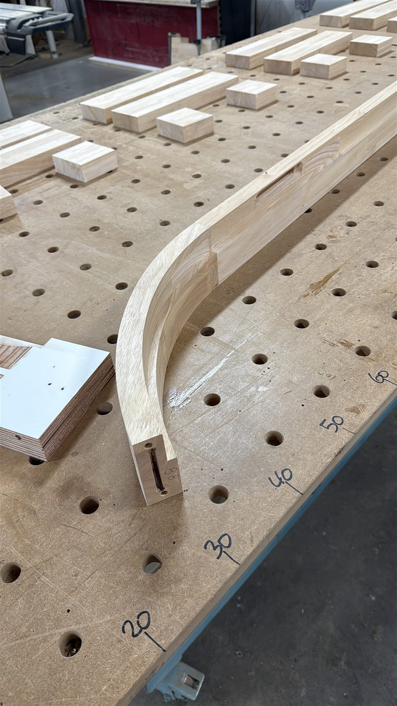
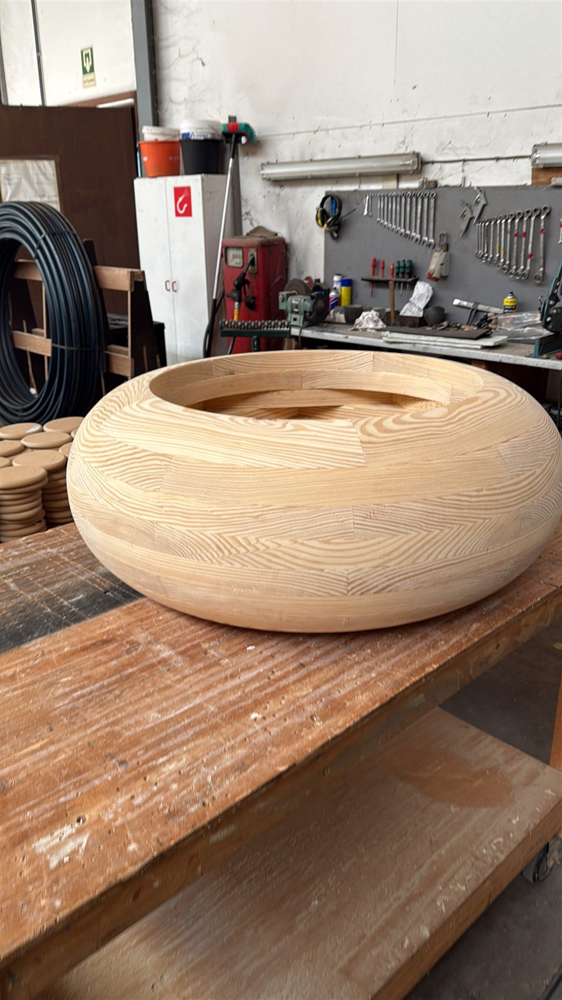
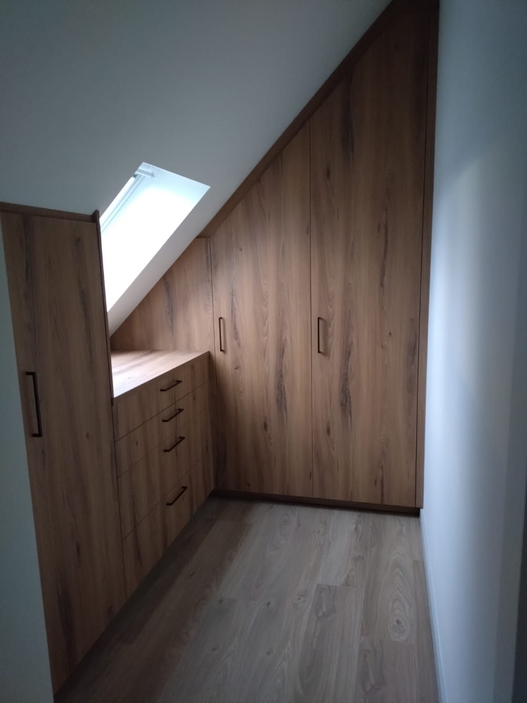
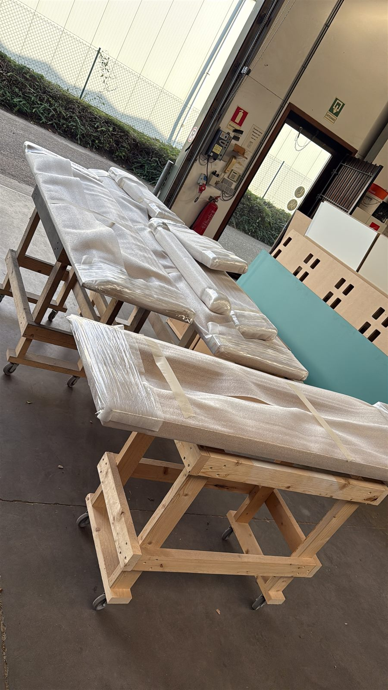

Driedimensionaal freeswerk
Profielen en vormen die uit een massief blok gefreesd worden.
Realisaties
Een greep uit wat wij maken. De meeste stukken vertrekken als onderdeel of als afgewerkt meubel naar een interieurbouwer of schrijnwerker.
Profielen en vormen die uit een massief blok gefreesd worden.

Bogen en gebogen lijsten in massief hout, op maat van uw ontwerp.

Ronde en organische vormen, opgebouwd en gefreesd uit massief hout.

Kasten en kastenwanden, ook onder een schuin dak of in een moeilijke hoek.

Tafelbladen en werkbladen in fineer en massief hout, afgewerkt in ons atelier.

Deuren en panelen op maat, met of zonder profilering.
Vertel ons wat u zoekt. Wij denken mee over materiaal, afwerking en budget.